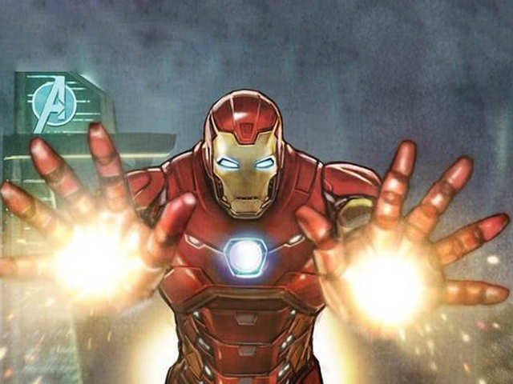

Iron Man is a superhero appearing in American comic books published by Marvel Comics. The character was co-created by writer and editor Stan Lee, developed by scripter Larry Lieber, and designed by artists Don Heck and Jack Kirby. Iron Man possesses powered armor that gives him superhuman strength and durability, flight, and an array of weapons. The armor is invented and worn by Stark (with occasional short-term exceptions).
